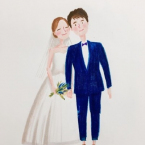

BÍ MẬT CHUYỆN TÌNH CAY ĐẮNG
Cơn mưa chiều òa ập xuống con phố thân thuộc, Linh hối hả phóng xe về thật nhanh. Cô cần phải trở về nhà, vun vén bữa cơm chiều với những người mà cô yêu quý. Bỗng, một chiếc xe từ xa lao lại, đâm sầm vào khiến cô ngã xuống bên đường. Linh cảm thấy chân mình đau điếng, cô gắng gượng đứng lên trong khi người đàn ông kia cuống quyết nâng cái xe sang một bên để đỡ …
Linh sững người lại khi nghe giọng nói này. Có gì đó rất thân thuộc, nó tự nhiên khiến trái tim cô đau nhói, giống như một giọng nói vọng về từ kí ức. Cô quên hết mọi đau đớn, nhìn người đàn ông đang cố gắng nâng mình dậy, Linh thảng thốt nhất ra anh. Gương mặt của Tuấn bị cơn mưa xối xả làm ướt nhưng cô vẫn nhận ra ánh mắt ấy, giọng nói ấy. Không thể nào nhầm được.
Có vẻ như mưa làm ướt nhòe đôi mắt nên Tuấn chưa đủ tỉnh táo để nhận ra Linh. Cô cảm thấy hơi buồn vì điều đó. Đã từng có thời những lời thề hẹn nói rằng dù có vật đổi sao rời cũng chẳng quên nhau. Vậy mà hôm nay, mặt giáp mặt, tay kề tay, anh lại không nhận ra người con gái mình từng yêu.
Hai người ghé vào quán cà phê ngay cạnh đó. Tuấn cuống quýt ngồi rạp xuống bên dưới để băng chân cho Linh. Anh lúc nào cũng vậy, chu đáo, ân cần và tình cảm. Chính điều này đã khiến cho Linh yêu anh và bây giờ không thể quên anh. Nhưng không quên thì có nghĩa gì khi giữa hai người có một rào cản quá lớn chẳng thể nào vượt qua.
Thật khó để mở lời trong hoàn cảnh như thế nào. Hai người tình cũ gặp lại nhau. Cả hai bối rối khi nhìn vào mắt nhau, không biết phải bắt đầu câu chuyện thế nào cho những kí ức năm xưa không ùa về và làm tổn thương đôi phương

Câu nói của Tuấn vang lên trùng khít với “Cuộc sống của anh sao rồi” mà Linh nói ra. Cả hai bật cười. Lúc nào hai người cũng đồng điệu với nhau như vậy. Nhưng có lẽ cũng chỉ là trùng hợp mà thôi, trong tình huống này, ai cũng hỏi nhau một câu xã giao như vậy. Linh không biết phải trả lời câu hỏi đó thế nào bởi vì muốn che giấu sự thật nên cô ra đi, làm sao cô có thể nói với anh điều đó
“Em ổn, em đang có một gia đình hạnh phúc”
Chiếc nhẫn cưới trên tay Tuấn đã khiến Linh không đủ can đảm để nói lên sự thật. Cô cũng có một chiếc nhẫn cưới như vậy trên tay nên Tuấn có vẻ tin vào câu chuyện mà Linh tạo dựng. Giọng anh trùng xuống nhưng gương mặt vẫn gượng cười:
“Vậy thì tốt quá, em phải sống thật hạnh phúc nhé!”
Nhìn thật lâu chiếc nhẫn trên tay Tuấn, lòng Linh buồn vô hạn. Vậy là đã có một người con gái khác thay cô yêu anh. Anh sẽ cưới người đó, sẽ cùng sinh sống trọn đời bên người đó, sẽ gọi người đó bằng vợ. Đó đã từng là giấc mơ của Linh, nhưng giờ đây, người khác sẽ thay cô thực hiện. Linh không giấu nổi sự buồn bã trong đôi mắt nhưng miệng cô thì vẫn cười tươi tắn:
Nhìn thật lâu chiếc nhẫn trên tay Tuấn, lòng Linh buồn vô hạn. Vậy là đã có một người con gái khác thay cô yêu anh. Anh sẽ cưới người đó, sẽ cùng sinh sống trọn đời bên người đó, sẽ gọi người đó bằng vợ. Đó đã từng là giấc mơ của Linh, nhưng giờ đây, người khác sẽ thay cô thực hiện. Linh không giấu nổi sự buồn bã trong đôi mắt nhưng miệng cô thì vẫn cười tươi tắn
Lưu Khưu Mính